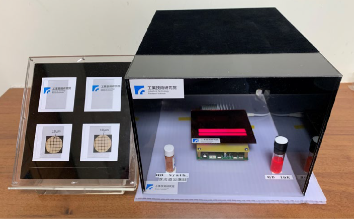

| 下世代廣色域自發光元件 Next Generation Wide Color Gamut mini-LED Device |
| 開發 QDCC 自發光元件整合技術，利用量子點高色飽和度 的特點，並結合可 IJP 無光罩製程之成本優勢，使下世代 mini/micro LED 顯示器達到廣色域效果與競爭力，其成果 可應用於高階顯示器，提升其附加價值。 The project is develop QDCC with mini/micro LED integration technology. It utilizes the characteristics of high color saturation of quantum dots, and combine the cost advantage of IJP maskless process, so that the next generation mini/micro LED display can achieve wide color gamut effect and competitiveness. The results can be applied to high-end displays to enhance their added value  |
| 技術洽詢聯絡人：李政穎 聯絡電話：03-591-4958 手機:0912-513041 E-mail：JYLI@itri.org.tw |